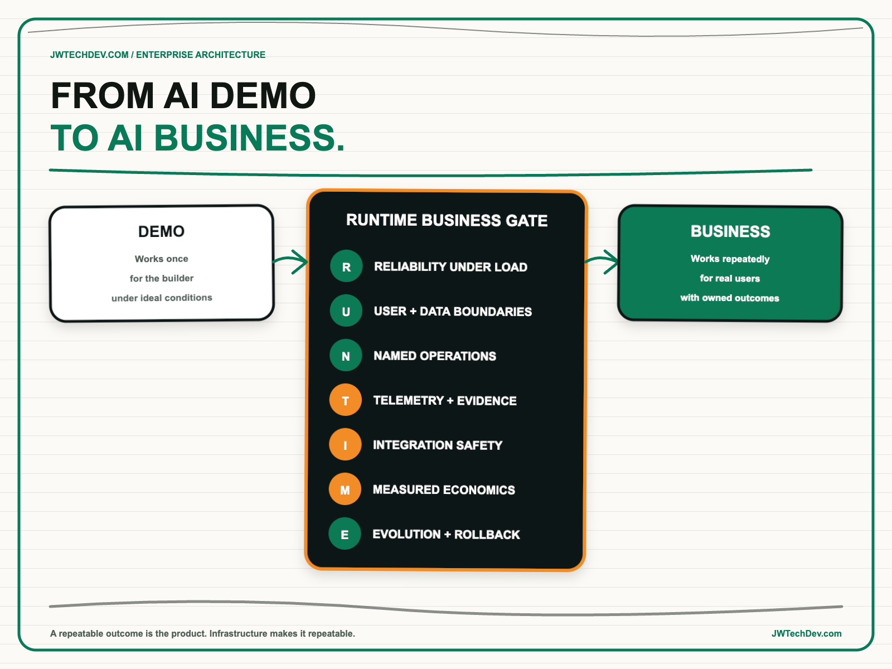

Infrastructure is the difference between an AI demo and an AI business.
A demo proves that a model can produce an impressive result under controlled conditions. A business needs that result to be available, authorized, observable, recoverable, affordable, and repeatable for real users. The gap between those two states is not another prompt. It is infrastructure.

Quick answer
An AI demo becomes a business capability only when the organization can deliver a useful outcome repeatedly under real operating conditions. That requires more than model access. It requires infrastructure for identity, data, integration, reliability, telemetry, release management, support, and cost attribution.
I use the RUNTIME Business Gate to test that transition: reliability under load, user and data boundaries, named operations, telemetry and evidence, integration safety, measured economics, and evolution with rollback. If those capabilities are missing, the team has a promising experiment, not a dependable product.
The demo gap is a systems problem
A demo usually has a cooperative user, a small data set, a narrow happy path, and a builder standing nearby. Production introduces concurrency, permissions, stale data, downstream failures, rate limits, support tickets, changing models, and users who will do things the design team never anticipated.
AWS Prescriptive Guidance describes this transition as a layered platform problem. Reliable data and compute infrastructure sit beneath approved models, security and governance, and repeatable application patterns. AWS also identifies infrastructure readiness, integration, sensitive data protection, cost optimization, and ROI measurement as common barriers between prototypes and production.
This is why a model API can remove infrastructure work without eliminating infrastructure responsibility. A serverless inference endpoint still belongs to an application that needs identity, storage, retrieval, networking, monitoring, failure handling, and operational ownership. Managed services change who performs the undifferentiated work. They do not make the workload boundary disappear.
The RUNTIME Business Gate
R: Reliability under load. Define availability, latency, throughput, quotas, timeout behavior, and graceful degradation. Test what happens when the model, retrieval layer, or tool is slow. AWS Well-Architected guidance recommends bounded retries with exponential backoff, jitter, and maximum retry limits so stressed components are not overwhelmed. A production design needs an explicit answer for partial failure.
U: User and data boundaries. Authenticate the human or service, preserve authorization through retrieval and tool calls, isolate tenants and sessions, and classify the data entering prompts, logs, and outputs. AgentCore Runtime, for example, isolates sessions in dedicated microVMs and treats session state and durable memory as different concerns. The architecture must be equally clear about where identity, ephemeral context, and persistent records live.
N: Named operations. Assign owners for the application, runtime, data, security, evaluation, and business outcome. Set service objectives, escalation paths, recovery procedures, and a kill switch. A model owner cannot be the default owner of every surrounding dependency. Production exists only when someone is accountable after the demo team leaves the room.
T: Telemetry and evidence. Capture the complete request path: user, model, retrieval, tool invocation, policy decision, latency, error, cost, and final outcome. AgentCore Observability organizes production evidence through sessions, traces, and spans, including tool execution and resource use. The point is not to collect more logs. It is to reconstruct why the system acted, failed, or cost what it did.
I: Integration safety. Treat every external action as a distributed-systems contract. Use idempotency, bounded permissions, schema validation, timeouts, and compensating actions. Separate read, draft, approve, write, publish, and destructive operations. The more an agent can act across business systems, the more the integration layer determines the real risk.
M: Measured economics. Calculate the loaded cost of one successful business outcome. Include model calls, retrieval, storage, orchestration, retries, tools, observability, human review, and support. Then measure adoption and completion quality. Token cost is useful telemetry, but it is not the business case.
E: Evolution and rollback. Version models, prompts, retrieval configuration, tools, policies, infrastructure, and evaluation sets. Automate release gates and keep a tested rollback path. The AWS Generative AI Lens emphasizes traceability, automated lifecycle management, reliable component communication, graceful failure, and artifact versioning. These are not optional process decorations. They are how a production system changes without becoming unknowable.
Build the infrastructure through the business case
Infrastructure should not become a blank-check platform program. Start with one production-bound workflow and define its outcome, risk, demand pattern, and unit of value. Build the smallest reliable path that can support it. Then prove that a second workload can reuse a meaningful portion of that path.
The platform earns investment when it reduces time, risk, or cost for multiple teams. Reusable identity integration, approved model access, evaluation pipelines, observability, tool gateways, and deployment patterns are valuable because they prevent every product team from rebuilding the same controls. The test is consumption, not the size of the service catalog.
This also changes executive reporting. Instead of saying that a prototype achieved an impressive benchmark, report successful business outcomes, adoption, reliability, policy exceptions, recovery performance, and loaded unit cost. Those measures reveal whether the system is becoming a business or merely a more expensive demo.
What to do next Monday
- Choose one demo expected to reach production. Name the user, business outcome, data classes, allowed actions, and expected demand.
- Set three operating thresholds. Define success quality, response time, and loaded cost per completed outcome.
- Run the RUNTIME Business Gate. Mark each capability green, amber, or red and attach evidence.
- Exercise one failure path. Simulate an unavailable model, failed tool call, or stale data source and observe the user experience.
- Name the production owners. Assign decision rights for runtime, data, security, evaluation, and the business result.
- Fund one reusable improvement. Fix the highest-risk infrastructure gap in a way the next workload can consume.
- Schedule a release review. Require evidence for quality, reliability, permissions, economics, and rollback before launch.
A demo answers, “Can this work?” Infrastructure answers, “Can this keep working for the people and business depending on it?” That second question is where an AI capability becomes an AI business.
I will be at AFROTECH in Houston November 2-6. If you are building an enterprise AI platform, global delivery organization, or technical go-to-market motion, I would be glad to compare notes.
Sources checked
- AWS Prescriptive Guidance: building an enterprise-ready generative AI platform
- AWS Prescriptive Guidance: layered approach for generative AI development
- AWS Prescriptive Guidance: reliable data and compute infrastructure
- AWS Well-Architected Generative AI Lens
- AWS Well-Architected Framework: control and limit retry calls
- Amazon Bedrock AgentCore: isolated runtime sessions
- Amazon Bedrock AgentCore: observability for agentic resources
Build the operating path, not only the demo
Explore more practical frameworks for enterprise AI, cloud architecture, governance, and technical leadership.
Get the free starter kit